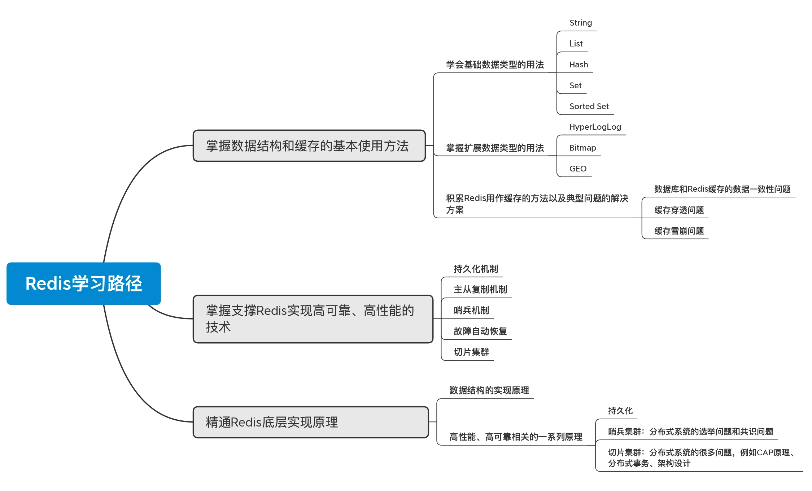

- 00 开篇词 这样学Redis，才能技高一筹.md
- 01 基本架构：一个键值数据库包含什么？.md
- 02 数据结构：快速的Redis有哪些慢操作？.md
- 03 高性能IO模型：为什么单线程Redis能那么快？.md
- 04 AOF日志：宕机了，Redis如何避免数据丢失？.md
- 05 内存快照：宕机后，Redis如何实现快速恢复？.md
- 06 数据同步：主从库如何实现数据一致？.md
- 07 哨兵机制：主库挂了，如何不间断服务？.md
- 08 哨兵集群：哨兵挂了，主从库还能切换吗？.md
- 09 切片集群：数据增多了，是该加内存还是加实例？.md
- 10 第1～9讲课后思考题答案及常见问题答疑.md
- 11 “万金油”的String，为什么不好用了？.md
- 12 有一亿个keys要统计，应该用哪种集合？.md
- 13 GEO是什么？还可以定义新的数据类型吗？.md
- 14 如何在Redis中保存时间序列数据？.md
- 15 消息队列的考验：Redis有哪些解决方案？.md
- 16 异步机制：如何避免单线程模型的阻塞？.md
- 17 为什么CPU结构也会影响Redis的性能？.md
- 18 波动的响应延迟：如何应对变慢的Redis？（上）.md
- 19 波动的响应延迟：如何应对变慢的Redis？（下）.md
- 20 删除数据后，为什么内存占用率还是很高？.md
- 21 缓冲区：一个可能引发“惨案”的地方.md
- 22 第11～21讲课后思考题答案及常见问题答疑.md
- 23 旁路缓存：Redis是如何工作的？.md
- 24 替换策略：缓存满了怎么办？.md
- 25 缓存异常（上）：如何解决缓存和数据库的数据不一致问题？.md
- 26 缓存异常（下）：如何解决缓存雪崩、击穿、穿透难题？.md
- 27 缓存被污染了，该怎么办？.md
- 28 Pika：如何基于SSD实现大容量Redis？.md
- 29 无锁的原子操作：Redis如何应对并发访问？.md
- 30 如何使用Redis实现分布式锁？.md
- 31 事务机制：Redis能实现ACID属性吗？.md
- 32 Redis主从同步与故障切换，有哪些坑？.md
- 33 脑裂：一次奇怪的数据丢失.md
- 34 第23~33讲课后思考题答案及常见问题答疑.md
- 35 Codis VS Redis Cluster：我该选择哪一个集群方案？.md
- 36 Redis支撑秒杀场景的关键技术和实践都有哪些？.md
- 37 数据分布优化：如何应对数据倾斜？.md
- 38 通信开销：限制Redis Cluster规模的关键因素.md
- 39 Redis 6.0的新特性：多线程、客户端缓存与安全.md
- 40 Redis的下一步：基于NVM内存的实践.md
- 41 第35～40讲课后思考题答案及常见问题答疑.md
- 加餐 01 经典的Redis学习资料有哪些？.md
- 加餐 02 用户Kaito：我是如何学习Redis的？.md
- 加餐 03 用户Kaito：我希望成为在压力中成长的人.md
- 加餐 04 Redis客户端如何与服务器端交换命令和数据？.md
- 加餐 05 Redis有哪些好用的运维工具？.md
- 加餐 06 Redis的使用规范小建议.md
- 加餐 07 从微博的Redis实践中，我们可以学到哪些经验？.md
- 结束语 从学习Redis到向Redis学习.md
加餐 02 用户Kaito：我是如何学习Redis的？
在看课程留言的时候，我发现，Kaito 同学的总结常常特别精彩，所以就请编辑帮我联系了 Kaito，想请他来聊一聊具体是怎么学习 Redis 的。
接下来，我就把 Kaito 的学习经验分享给你。
你好，我是 Kaito。
很荣幸受到极客时间编辑的邀请，来和你分享一下我学习 Redis 的方法，希望可以帮助你更加高效地学习 Redis。
我先做个自我介绍。
从毕业到现在，我已经工作 7 年了，目前是北京的一家移动互联网公司的资深研发工程师。我之前主导设计过垂直爬虫采集平台，后来开发面向用户的后端服务系统，现在在从事基础架构和数据库中间件方面的研发工作，具体是做跨数据中心的存储层灾备与多活领域的研发，主要技术栈是 Golang。
我们公司采用的 Redis 集群方案是 Codis，所以我也主要负责公司内的 Codis 定制化开发工作。在最近的一年多时间里，我的很多工作都是围绕 Redis 展开的。在这期间，我遇到了很多 Redis 相关的问题，例如访问延迟变大、部署运维参数配置不合理，等等，也狠狠地恶补了 Redis 方面的知识，看过书，读过源码，出过 Bug，踩过坑，一路走来，我逐渐梳理出了一套高效的学习路径，我把它分为三大模块：
- 掌握数据结构和缓存的基本使用方法；
- 掌握支撑 Redis 实现高可靠、高性能的技术；
- 精通 Redis 底层实现原理
今天的这次分享，我想先和你聊聊“如何高效学习 Redis”，后面我会再跟你分享我的一些学习心得和总结。
掌握数据结构和缓存的基本使用方法
要想会用一种系统，我们首先要会一些基本操作。我们平时在开发业务系统时，或多或少地会把 Redis 当作数据库或缓存使用。Redis 也提供了非常丰富的数据结构，这也给我们的开发提供了极大的便利。
所以，要想快速地上手 Redis，我建议你从三个步骤入手：
- 学会基础数据类型的用法；
- 掌握扩展数据类型的用法；
- 积累一些 Redis 用作缓存的方法以及典型问题的解决方案。
在刚接触 Redis 时，第一步就是要学习它的基础数据结构，也就是 String、List、Hash、Set、Sorted Set。毕竟，Redis 之所以这么受欢迎，跟它丰富的数据类型是分不开的，它的数据都存储在内存中，访问速度极快，而且非常贴合我们常见的业务场景。我举几个例子：
- 如果你只需要存储简单的键值对，或者是对数字进行递增递减操作，就可以使用 String 存储；
- 如果需要一个简单的分布式队列服务，List 就可以满足你的需求；
- 如果除了需要存储键值数据，还想单独对某个字段进行操作，使用 Hash 就非常方便；
- 如果想得到一个不重复的集合，就可以使用 Set，而且它还可以做并集、差集和交集运算；
- 如果想实现一个带权重的评论、排行榜列表，那么，Sorted Set 就能满足你。
当我们能够熟练地使用这些基础的数据类型时，就说明我们已经入门了 Redis。此时，如果你的业务体量不是很大，那么，在使用过程中并不会遇到很大的问题。但是，现在已经进入了大数据时代，我们不可避免地会遇到数据请求量巨大的业务场景，对于这种情况，基础数据类型已经无法应对了。
举个最简单的例子，当数据量很小时，我们想要计算 App 里某一天的用户 UV 数，只需要使用一个 Set 存储这一天的访问用户，再使用 SCARD，就可以计算出结果了。但是，假如一天的访问用户量达到了亿级，就不能这样存储了，因为这会消耗非常大的内存空间。而且，这么大的 key 在过期时会引发阻塞风险。这个时候，我们就需要学习 Redis 的数据结构的高阶用法了。
Redis 提供了三种扩展数据类型，就是咱们前面学到的 HyperLogLog、Bitmap 和 GEO。
HyperLogLog 就非常适合存储 UV 这样的业务数据，而且它占用的内存非常小。同样地，当需要计算大量用户的签到情况时，你会发现，使用 String、Set、Sorted Set 都会占用非常多的内存空间，而 Redis 提供的位运算就派上用场了。如果你遇到了缓存穿透问题，就可以使用位运算的布隆过滤器，这种方法能够在占用内存很少的情况下解决我们的问题。
基于这个思路，你会发现，有很多巧妙地使用 Redis 的方法。在这个阶段，基于 Redis 提供的数据类型，你可以尽可能地去挖掘它们的使用方法，去实现你的业务模型。
除了借助数据类型实现业务模型之外，我们在使用 Redis 时，还会经常把它当作缓存使用。
因为 Redis 的速度极快，非常适合把数据库中的数据缓存一份在 Redis 中，这样可以提高我们应用的访问速度。但是，由于 Redis 把数据都存储在内存中，而一台机器的内存是有上限的，是无法存储无限数据的。所以，我们还需要思考“Redis 如何做缓存”的问题。
你可能也听说过，Redis 在用作缓存时，有很多典型的问题，比如说数据库和 Redis 缓存的数据一致性问题、缓存穿透问题、缓存雪崩问题。这些问题会涉及到缓存策略、缓存如何设置过期时间、应用与缓存如何配合，等等。所以，我们在前期学习的时候，还要知道一些应对策略。
学会了这些，我们就能简单地操作 Redis 了。接下来，我们就可以学习一些高阶的用法。
掌握支撑 Redis 实现高性能、高可靠的技术点
如果你看过软件架构设计相关的文章，应该就会知道，一个优秀的软件，必须符合三个条件：高可靠、高性能、易扩展。作为一个非常优秀的数据库软件，Redis 也是符合这些条件的。不过，易扩展是针对深度参与 Redis 开发来说的，我们接触得比较少，暂时可以忽略。我们需要关注另外两个：高可靠、高性能。
Redis 之所以可以实现高可靠、高性能，和它的持久化机制、主从复制机制、哨兵、故障自动恢复、切片集群等密不可分。所以，我们还要掌握这一系列机制。这样的话， 在出现问题时，我们就可以快速地定位和解决问题了。而且，我们还可以从 Redis 身上学习一个优秀软件的设计思想，这也会给我们学习其他数据库提供非常大的帮助。
我先从一个最简单的单机版 Redis 说起，和你聊一聊我的理解。
假设我们只部署一个 Redis 实例，然后把业务数据都存储在这个实例中，而 Redis 只把数据存储在内存中，那么，如果此时，这个 Redis 实例故障宕机了，就意味着，我们的业务数据就全部丢失了，这显然是不能接受的。那该如何处理呢？
这就需要 Redis 有持久化数据的能力。具体来说，就是可以把内存中的数据持久化到磁盘，当实例宕机时，我们可以从磁盘中恢复数据。所以，Redis 提供了两种持久化方式：RDB 和 AOF，分别对应数据快照和实时的命令持久化，它们相互补充，实现了 Redis 的持久化功能。
有了数据的持久化，是不是就可以高枕无忧了？
不是的。当实例宕机后，如果我们需要从磁盘恢复数据，还会面临一个问题：恢复也是需要时间的，而且实例越大，恢复的时间越长，对业务的影响就越大。
针对这个问题，解决方案就是：采用多个副本。我们需要 Redis 可以实时保持多个副本的同步，也就是我们说的主从复制。这样，当一个实例宕机时，我们还有其他完整的副本可以使用。这时，只需要把一个副本提升为主节点，继续提供服务就可以了，这就避免了数据恢复过程中的一些影响。
但是，进一步再想一下，当主节点宕机后，我们把从节点提升上来，这个过程是手动的。手动触发就意味着，当故障发生时，需要人的反应时间和操作时间，这个过程也需要消耗时间。晚操作一会儿，就会对业务产生持续的影响，这怎么办呢？我们很容易会想到，当故障发生时，是不是可以让程序自动切换主从呢？
要实现主从自动切换，就需要能够保证高可用的组件：哨兵。哨兵可以实时检测主节点的健康情况。当主节点故障时，它会立即把一个从节点提升为主节点，实现自动故障转移，整个过程无需人工干预，程序自动完成，大大地减少了故障带来的影响。
所以你看，经过刚刚的分析，我们知道，为了保证可靠性，一个数据库软件必然需要做到数据持久化、主从副本和故障自动恢复。其他的数据库软件也遵循这样的原则，你可以留意观察一下。
到这里，我们说的都是针对单个 Redis 实例的功能，如果我们业务的读写请求不大，使用单个实例没有问题，但是当业务写入量很大时，单个 Redis 实例就无法承担这么大的写入量了。
这个时候，我们就需要引入切片集群了，也就是把多个 Redis 实例组织起来，形成一个集群，对外提供服务。同时，这个集群还要具有水平扩展的能力，当业务量再增长时，可以通过增加机器部署新实例的方法，承担更大的请求量，这样一来，我们的集群性能也可以变得很高。
所以，就有了 Redis Cluster、Twemproxy、Codis 这些集群解决方案。其中，Redis Cluster 是官方提供的集群方案，而 Twemproxy 和 Codis 是早期 Redis Cluster 不够完善时开发者设计的。
既然是多个节点存储数据，而且还要在节点不足时能够增加新的节点扩容集群，这也对应着切片集群的核心问题：数据路由和数据迁移。
数据路由用于解决把数据写到哪个节点的问题，而数据迁移用于解决在节点发生变更时，集群数据重新分布的问题。
当我们从单机版 Redis 进入到切片集群化的领域时，就打开了另一个世界的大门。
不知道你有没有思考过这样一个问题：当我们的系统需要承担更大体量的请求时，从应用层到数据层，容易引发性能问题的地方在哪儿？
其实，最终都会落到数据库层面。因为我们的应用层是无状态的，如果性能达到了瓶颈，就可以增加机器的横向扩展能力，部署多个实例，非常容易。但是，应用层水平扩容后，数据库还是单体的，大量请求还是只有一个机器的数据库在支撑，这必然会产生性能瓶颈。所以，最好的方案是，数据库层也可以做成分布式的，这也就是说，数据也可以分布在不同的机器上，并且拥有横向扩展的能力，这样，在业务层和数据库层，都可以根据业务的体量进行弹性伸缩，非常灵活。
切片集群虽然更可靠，性能更好，但是因为涉及到多个机器的部署，所以就会引入新的问题，比如说，多个节点如何组织？多个节点的状态如何保持一致？跨机器的故障如何检测？网络延迟时集群是否还能正常工作？这些就涉及到分布式系统领域相关的知识了。
上面这些都是跟可靠性相关的知识，下面我们再来看看高性能。
Redis 的数据都存储在内存中，再加上使用 IO 多路复用机制，所以，Redis 的性能非常高。如果配合切片集群的使用，性能就会再上一个台阶。但是，这也意味着，如果发生操作延迟变大的情况，就会跟我们的预期不符。所以，如何使用和运维好 Redis 也是需要我们重点关注的，只有这样，才可以让 Redis 持续稳定地发挥其高性能。
而性能问题，就贯穿了刚刚我们说到的所有方面，业务使用不当，高可靠、切片集群运维不当，都会产生性能问题。
例如，在业务使用层面，使用复杂度过高的命令、使用 O(N) 命令而且 N 很大、大量数据集中过期、实例内存达到上限等，都会导致操作延迟变大；在运维层面，持久化策略选择不当、主从复制参数配置不合理、部署和监控不到位、机器资源饱和，等等，也会产生性能问题。
Redis 性能涉及到了 CPU、内存、网络甚至磁盘的方方面面，一旦某个环节出现问题，都会影响到性能。所以，在第二个阶段，我们就需要掌握跟高可靠、高性能相关的一系列机制。
这个时候，我们的 Redis 使用能力就超过了很多人，不过还达不到精通的程度。要想成为 Redis 大神，我们还必须具备能够随时解决棘手问题的能力。这个时候，我们就要去学习 Redis 的底层原理了。
精通 Redis 底层实现原理
我们要知道各种数据类型的底层原理。这个时候，可以去看下源码。例如，t_string.c、t_list.c、t_hash.c、t_set.c、t_zset.c。
在阅读源码的时候，我们就会了解每种数据结构的具体实现，例如 List 在底层是一个链表，在 List 中查找元素时就会比较慢，而 Hash 和 Set 底层都是哈希表实现的，所以定位元素的速度非常快，而 Sorted Set 是把哈希表和跳表结合起来使用，查找元素和遍历元素都比较快。如果你不了解这些数据结构的实现，就无法选择最佳的方案。
如果你看得比较仔细的话，还会发现，每种数据结构对应了不同的实现，例如 List、Hash、Sorted Set 为了减少内存的使用，在数据量比较少时，都采用压缩列表（ziplist）存储，这样可以节省内存。而 String 和 Set 在存储数据时，也尽量选择使用 int 编码存储，这也是为了节省内存占用。这些都是 Redis 针对数据结构做的优化。只有了解了这些底层原理，我们在使用 Redis 时才能更加游刃有余，把它的优势真正发挥出来。
另外，我们还需要掌握跟高性能、高可靠相关的一系列原理，主要就是持久化、主从同步、故障转移、切片集群是如何做的，比如说：
- RDB 和 AOF 重写都使用了操作系统提供的"fork"机制进行数据持久化，这涉及到了操作系统层面的知识；
- 故障转移使用哨兵集群实现，而哨兵集群的维护就涉及到了分布式系统的选举问题和共识问题；
- 切片集群是操作多个机器上的节点，如何对多个节点进行管理、调度和维护，也涉及到分布式系统的很多问题，例如 CAP 原理、分布式事务、架构设计；
- ……
掌握了原理，就可以以不变应万变，无论遇到什么问题，我们都可以轻松地进行分析和定位了。到了这个阶段，我们的 Redis 应用能力就已经远超很多人了。
好了，这些就是我总结的 Redis 学习路径了，基本上是按照从易到难逐渐递进的。在学习的过程中，可以有针对性地看一些书籍，以及相关的课程，比如咱们的专栏，这些内容可以帮助你快速地提升实战能力。

最后，我也想请你聊一聊，你是怎么学习 Redis 的呢？希望你能在留言区聊聊你的学习方法，我们一起交流。
© 2019 - 2023 Liangliang Lee. Powered by Vert.x and hexo-theme-book.